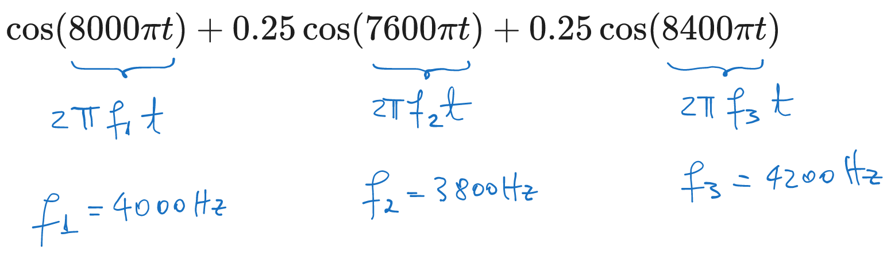

4 Exercises 01: Sampling
4.1 Exercise 1
Are the following signals periodic? If yes, compute their period.
- a). \(x[n] = \cos(\pi \frac{3}{10} n)\)
- b). \(x[n] = \cos(7.2 \pi n)\)
- c). \(x[n] = \sin(3n)\)
- d). \(x[n] = \sin(\frac{\pi n}{2}) + \cos(\frac{3 \pi n}{4})\)
Solution
a). We want to find the smallest positive integer \(N\) such that \(x[n] = x[n+N]\), i.e. \[\begin{aligned} \cos(\pi \frac{3}{10} n) &= \cos(\pi \frac{3}{10} (n+N)) \\ &= \cos(\pi \frac{3}{10} n + \pi \frac{3}{10} N) \\ \end{aligned}\]
This is true if the extraterm \(\pi \frac{3}{10} N\) is \(2 \pi k\), i.e.: \[\begin{aligned} \pi \frac{3}{10} N &= 2 \pi k \\ \frac{3}{10} N &= 2 k \\ N &= \frac{20}{3} k \end{aligned}\] with \(k\) integer. The smallest positive integer \(N\) is \(N=20\) (when \(k=3\)). Therefore the signal is periodic with period \(N=20\).
b). We want to find the smallest positive integer \(N\) such that \(x[n] = x[n+N]\), i.e. \[\begin{aligned} \cos(7.2 \pi n) &= \cos(7.2 \pi (n+N)) \\ &= \cos(7.2 \pi n + 7.2 \pi N) \\ \end{aligned}\]
This is true if \(7.2 \pi N = 2 \pi k\), i.e.: \[\begin{aligned} 7.2 \pi N &= 2 \pi k \\ 3.6 N &= k \\ \end{aligned}\] with \(k\) integer. The smallest positive integer \(N\) is \(N=5\).
An alternative way is to to treat this as a continuous signal and identify the frequency of the cosine: \[\begin{aligned} \cos(7.2 \pi n) &= \cos(2 \pi f n) \\ f &= 3.6Hz \end{aligned}\] The period should be \(N=\frac{1}{f} = \frac{1}{3.6} = \frac{5}{18}\), but since we need \(N\) to be an integer because our signal ia actually discrete, we consider the smallest integer multiple of this, which is: \[N = \frac{5}{18} \cdot 18 = 5\] Therefore the signal is periodic with period \(N=5\).
c). We want to find the smallest positive integer \(N\) such that \(x[n] = x[n+N]\), i.e. \[\begin{aligned} \sin(3 n) &= \sin(3 (n+N)) \\ &= \sin(3 n + 3 N) \\ \end{aligned}\]
This is true if \(3 N = 2 \pi k\), i.e.: \[\begin{aligned} 3 N &= 2 \pi k \\ N &= \frac{2}{3} \pi k \\ \end{aligned}\] with \(k\) integer.
This is impossible, because \(k\) is an irrational number which means that multiplying and dividing it by the integer numbers 2, 3, \(k\) will never become an integer as we need \(N\) to be.
Therefore the signal is not periodic.
d). We want to find the smallest positive integer \(N\) such that \(x[n] = x[n+N]\), i.e. \[\begin{aligned} \sin(\frac{\pi n}{2}) + \cos(\frac{3 \pi n}{4}) &= \sin(\frac{\pi}{2} (n+N)) + \cos(\frac{3 \pi}{4} (n+N)) \\ &= \sin(\frac{\pi}{2} n + \frac{\pi}{2} N) + \cos(\frac{3 \pi}{4} n + \frac{3 \pi}{4} N) \\ \end{aligned}\]
This is true if \(\frac{\pi}{2} N = 2 \pi k\) and \(\frac{3 \pi}{4} N = 2 \pi k'\), i.e.: \[\begin{aligned} \frac{\pi}{2} N &= 2 \pi k \\ \frac{3 \pi}{4} N &= 2 \pi k' \\ \end{aligned}\] with \(k\), \(k'\) being integers.
This means: \[\begin{aligned} N &= 4 k \\ N &= \frac{8}{3} k' \\ \end{aligned}\]
The smallest positive integer \(N\) is \(N=8\) (when \(k=2\) and \(k'=3\)). Therefore the signal is periodic with period \(N=8\).
4.2 Exercise 2
Consider the following signal: \[x_a(t) = (1 + 0.5 cos(400 \pi t)) \cdot cos(8000 \pi t)\]
- a). Compute the minimum sampling frequency necessary for avoiding alias;
- b). The signal is sampled with 8000Hz. Write the discrete signal obtained via sampling;
- c). Does alias occur? If yes, identify the frequencies in the signal which are aliased;
- d). What is the analog signal reconstructed from the samples via ideal D/A.reconstruction?
Solution
a). Compute the minimum sampling frequency necessary for avoiding alias;
The minimum sampling frequency necessary for avoiding alias is the double of the maximum frequency in the signal, so we need to identify the maximum frequency in the signal.
For this we need to convert the multiplication of the two cosines into a sum of cosines, because a multiplication of two cosines produces a frequency which is higher than the starting frequencies.
Using the trigonometric identity: \[\begin{aligned} \cos(\alpha) \cos(\beta) &= \frac{1}{2} \left( \cos(\alpha - \beta) + \cos(\alpha + \beta) \right) \end{aligned}\] we have: \[\begin{aligned} x_a(t) &= (1 + 0.5 \cos(400 \pi t)) \cdot \cos(8000 \pi t) \\ &=\cos(8000 \pi t) + 0.5 \cos(8000 \pi t) \cos(400 \pi t) \\ &=\cos(8000 \pi t) + 0.5 \frac{1}{2} \left( \cos(8000 \pi t - 400 \pi t) + \cos(8000 \pi t + 400 \pi t) \right) \\ &=\cos(8000 \pi t) + 0.25 \cos(7600 \pi t) + 0.25 \cos(8400 \pi t) \\ \end{aligned}\]
If the signal is already given as a sum of sinusoidal components, we don’t need to do anything else, just leave it as it is.
Next, we identify the frequencies in the signal, which are: \[\begin{aligned} f_1 &= 4000Hz \\ f_2 &= 3800Hz \\ f_3 &= 4200Hz \\ \end{aligned}\]

The minimum sampling frequency for avoiding alias is therefore twice the maximum frequency, which is \(f_3 = 4200Hz\), i.e.: \[F_{s_{min}} = 2 \cdot 4200Hz = 8400Hz\]
b). The signal is sampled with 8000Hz. Write the discrete signal obtained via sampling;
Sampling the signal amounts to applying the variable transformation \(t = \frac{n}{F_s}\), i.e.: \[\begin{aligned} x[n] &= x_a(t) \Big|_{t = \frac{n}{F_s}} \\ &= \cos(8000 \pi \frac{n}{F_s}) + 0.25 \cos(7600 \pi \frac{n}{F_s}) + 0.25 \cos(8400 \pi \frac{n}{F_s}) \\ &= \cos(8000 \pi \frac{n}{8000}) + 0.25 \cos(7600 \pi \frac{n}{8000}) + 0.25 \cos(8400 \pi \frac{n}{8000}) \\ &= \cos(\pi n) + 0.25 \cos(\frac{19}{20} \pi n) + 0.25 \cos(\frac{21}{20} \pi n) \\ \end{aligned}\]
c). Does alias occur? If yes, identify the frequencies in the signal which are aliased;
The sampling frequency is \(F_s = 8000Hz\), which is lower than required for avoiding alias of the third component. Therefore we expect the third component to be aliased, while the first and second, for which \(F_s\) is more than double, are not aliased.
Indeed, let’s identify the frequencies in the discrete signal obtained: \[\begin{aligned} \pi n = 2 \pi f_1 n \Rightarrow f_1 &= \frac{1}{2} = 0.5 \\ \frac{19}{20} \pi n = 2 \pi f_2 n \Rightarrow f_2 &= \frac{19}{40} = 0.475 \\ \frac{21}{20} \pi n = 2 \pi f_3 n \Rightarrow f_3 &= \frac{21}{40} = 0.525 \\ \end{aligned}\]
We have \(f_1 < 0.5\), \(f_2 < 0.5\), which means they are not aliased, and \(f_3 > 0.5\), which is aliased. The frequency \(f_3\) is aliased to: \[f_3' = f_3 - 1 = 0.525 - 1 = -0.475 = -\frac{19}{40}\] which means that: \[\cos(2 \pi \frac{21}{40} n) = \cos(- 2 \pi \frac{19}{40} n), \forall n\]
d). What is the analog signal reconstructed from the samples via ideal D/A reconstruction?
Ideal A/D reconstruction means that we need to apply the inverse variable transformation \(n = t \cdot F_s\), but starting from the aliased frequencies in the signal, if any.
With the aliased frequency \(f_3'\), the discrete signal is: \[x[n] = \cos(\pi n) + 0.25 \cos(\frac{19}{20} \pi n) + 0.25 \cos(-\frac{19}{20} \pi n)\]
The analog signal reconstructed via ideal D/A reconstruction is: \[\begin{aligned} x_r(t) &= \cos(\pi \cdot t \cdot F_s) + 0.25 \cos(\frac{19}{20} \pi \cdot t \cdot F_s) + 0.25 \cos(-\frac{19}{20} \pi \cdot t \cdot F_s) \\ &= \cos(8000 \pi t) + 0.25 \cos(7600 \pi t) + 0.25 \cos(- 7600 \pi t) \\ &= \cos(8000 \pi t) + 0.25 \cos(7600 \pi t) + 0.25 \cos(7600 \pi t) \\ &= \cos(8000 \pi t) + 0.5 \cos(7600 \pi t) \end{aligned}\]
Due to aliasing, the reconstructed signal is not the same as the original signal.